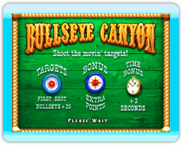

Ronda 1

Empieza con 20 segundos, con cuenta retroactiva hasta llegar a cero. Si disparas a los relojes de bonificación, aumentas el tiempo disponible para esa ronda solamente. Cada blanco tiene un valor predeterminado, que aparece al principio de cada juego. Gana tiempo de bonificación para la ronda 2 según lo buena que sea tu puntuación.
Ronda 2
Empieza con 15 segundos más el tiempo de bonificación que ganaste en la ronda 1. Los blancos se mueven más rápidamente y aparecen blancos de bonificación al azar, que te permiten aumentar tu puntuación.
Bonificación perfecta
 Cada juego tiene una bonificación perfecta, por ejemplo, cuando le atinas a las tres botellas en Saloon Shoot. En los juegos de emparejar objetos, como Balloon Wheel, debes igualar los colores en orden para obtener la bonificación perfecta. En otros juegos, como Bullseye Canyon, debes atinar al blanco con el primer tiro para lograr la bonificación perfecta. Cuando un jugador alcanza la bonificación perfecta, el juego muestra la imagen de bonificación perfecta.
Cada juego tiene una bonificación perfecta, por ejemplo, cuando le atinas a las tres botellas en Saloon Shoot. En los juegos de emparejar objetos, como Balloon Wheel, debes igualar los colores en orden para obtener la bonificación perfecta. En otros juegos, como Bullseye Canyon, debes atinar al blanco con el primer tiro para lograr la bonificación perfecta. Cuando un jugador alcanza la bonificación perfecta, el juego muestra la imagen de bonificación perfecta.
Ronda de bonificación
Cada uno de los parques de diversiones tiene una ronda de bonificación distinta: Bonus Wheel en Arcadia, Clown Drown en Dreamland y Dunk Tank en Lagoon Park. Para alcanzar la ronda de bonificación, el jugador deberá obtener un puntaje total de 15,000 o más en los cuatro juegos de un parque.